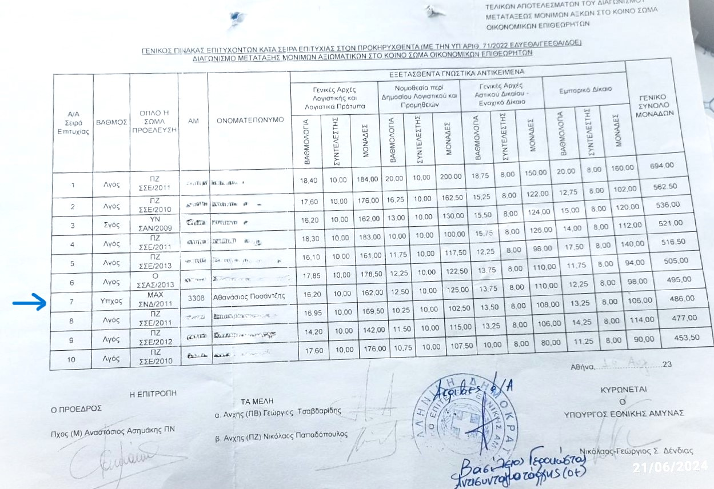

Education
Education and Training
- Naval Academy Officer (2007-2011):
- Participated in three educational trips with warships (2008, 2009, 2010)
- Member of the swimming team, competing in 100m butterfly style tournaments, earning 3rd place in a 5km race with a time of 19 minutes.
- Graduated with the grade of ensign.
Submarine School
- Submarine School (2013-2014):
- Gained comprehensive knowledge of submarine mechanical and electronic systems.
Army Financial Auditors Corps 2024
- I was successful in the examination of the army financial auditors corps obtaining the 7th rank.
